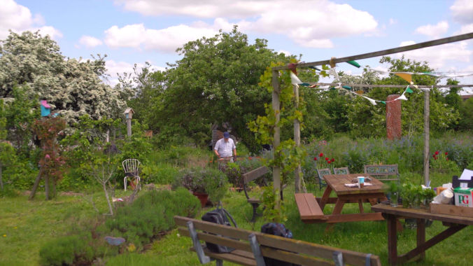

Making a social media video for your charity or social impact project might feel a bit overwhelming, but it doesn’t have to be. This simple guide breaks it down, with examples, helpful links, and tips, to help you share your story and connect with more people.
A good social media video can help more people see what you do, feel connected to your cause, and even decide to donate or get involved. Since most people watch videos on their phones these days, it’s one of the best ways for charities and social impact projects to reach more people and build trust.

Telling a good story is key to a great social media video. It’s not about packing in every stat or showing everything you do, it’s about creating a real connection. People remember stories, not facts. Here's how to make your message stick:
Start by asking yourself:
Who are you talking to? Think about your audience, are they donors, potential volunteers, partners, or the general public?
What’s the main message? Focus on one thing you want them to walk away with.
Whose story are you telling? Choose one clear example of someone whose life has been changed by your work.
Stick to one strong, simple story
Trying to squeeze in multiple stories or too many details can confuse your message. Just pick one powerful story and build around that. Trust that one clear story, well told, is more impactful than five rushed ones.
What’s a story arc, and why does it matter?
A good story has a beginning, middle, and end. In video, this helps guide your viewer emotionally, so they stay interested and feel something by the end.
Here’s how a simple story arc works:
The Hook: Grab attention fast. Use a striking visual or an emotional moment that makes people stop scrolling.
The Set-Up: Introduce the person, place, or issue. Keep it simple and relatable.
The Struggle: Show the challenge. What problem were they facing? Why does it matter?
The Transformation: Show the change. How did your charity or project make a difference?
The Resolution + Call to Action: Wrap it up and ask the viewer to do something—donate, share, get involved.
If you want inspiration for powerful, real-life storytelling, check out StoryCorps.
Tips to make your story connect:
Keep it human. Don’t just talk about programs, talk about people.
Use natural language. You don’t need fancy words; just be real.
Let emotion lead. A little vulnerability or joy on screen goes a long way.
You don’t need fancy equipment to make a great social media video, but getting the basics right can make a big difference in how your video looks and feels. Here are some simple tips to help you get started:
Lighting
Use natural light whenever possible. Shooting near a window or outside on a cloudy day gives soft, flattering light.
Avoid harsh overhead lighting or direct sunlight, these can cause unwanted shadows or make people squint.
Audio
Clear audio is just as important as good video. People will stop watching if they can’t hear properly.
A simple phone microphone can work if you’re close enough to the speaker. Try to record in a quiet space with little background noise.
Consider using an external mic (like a lapel mic) if you can, it’s a small investment that makes a big difference.
Composition and Framing
Keep your shots steady. Use a tripod or set your phone on a stable surface to avoid shaky footage.
Frame your subject thoughtfully. The “rule of thirds” is a handy guideline, imagine your frame divided into nine equal parts, and place your subject along those lines or at their intersections.
Leave some headroom (space above the subject’s head) and avoid cutting off important parts of the scene.
Colour
Keep your colours simple and consistent. Too many different colours in one shot can be distracting and make your video look less professional.
To get your video seen by as many people as possible, you want to make it easy for both real viewers and search engines to find your content. Here are some tips to help you get noticed without overcomplicating things:
Make Your Video Easy to Find
Use relevant keywords in your video title, description, and tags. Think about what words someone might type when looking for videos about your cause.
Don’t stuff your title or description with too many keywords. Keep it natural and easy to read, both for people and search engines.
Write a clear, concise description that explains what your video is about and why it matters. This helps search engines and also gives viewers a reason to watch.
Include links in the description to your website, donation page, or other relevant resources.
Tailor Your Video for Each Platform
Each social media platform works a bit differently, so it helps to customize your video for where you’re posting. For example on Youtube a thumbnail is super important in getting people to click on your video.
Don’t Forget the Call to Action (CTA)
Always end your video (or include a text overlay) with a clear CTA, tell viewers exactly what you want them to do next.
It could be something like, the ones I've listed below, but make it personal to your organisation.
“Donate now to support this cause.”
“Share this video to help spread the word.”
“Visit our website to learn more.”
“Sign up to volunteer today.”
Make your CTA easy to find in the video description and in any social posts where you share the video.


Feeling stuck with planning, filming, editing, or just figuring out where to start? You’re not alone and we’re here to help. At Munjiri, we work with purpose-driven organisations to create social media videos that actually connect with people, you can check out our services here. Whether you need help with the whole process or just one part, let us know.
katy@munjiri.com

Brand Video Production
Social Media Video Production
Nature Video Production
Creative Video Productions
Charity Video Production
Drone Videographer
Event Video Production
Product Video Production
Travel Video Production
Learn Video Making
Video Storytelling
Video Making Tips
Video Marketing & Social Media Strategies
Nature Stories
Behind the Scenes
Client Stories
Locations & Travel
Location
Based in Portugal and South Africa, offering video production services worldwide.
Email: katy@munjiri.com
Get updates and free resources.